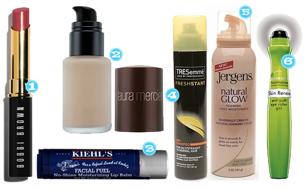

I’m probably super late to this party but I was using a Revlon cheapo eyelash curler for years and at least for me it didn’t do much. I would see all over the place, CURL YOUR LASHES as part of your quick 5 minute makeup routine and I would think, man that doesn’t do anything for me. WELL. I decided to try out this one by Tarte and IT’S THE BOMB! It literally curls SO MUCH I can’t BELIZE it! It’s worth the cost, plus this one that I bought came with a little sample size mascara and I’m never one to turn down trying a new mascara.
Curls
April 26, 2013 by
Set It And Forget It
April 25, 2013 by

First of all, do not get the impression from the title of this product that I’m an ALL NIGHTER type of girl unless by that you mean my kids are not sleeping and I’m up all night in that kind of way. But I can promise you I am not wearing makeup while my kids are trying to stay up all night and suck my will to live out of me. Â I originally bought this to try and set my makeup so it stays longer DURING THE DAY. I really only have time to apply my makeup first thing in the morning, so if I have dinner plans that night I don’t have time to start all over if my makeup has just melted off throughout the day. This stuff is pretty great because I can do my makeup first thing in the morning and spray a few sprays when I’m done and it really does set it for the day.
Nail Help
January 28, 2013 by

So I have been having a nail dilemma for a while now…I know that if I don’t go get manicures then I bite my nails. Time has been a problem for the last year in terms of getting manicures, so you can just imagine the state of my nails. I generally only have time to go get a manicure on a Saturday afternoon. Obviously sometimes that just doesn’t work out. So I need to get into some sort of new home routine that keeps everything looking somewhat nice so I don’t bite them. A LONG time ago I posted this home mani, and I can definitely get on that train again for sure. I also bought these nail wipes (IMPULSE PURCHASE) recently that I think will help when the polish starts chipping and I can’t get back to the nail salon.
Josie Maran Bear Naked Nail Wipes
So tell me, what should I do in terms of base coat and top coat at home when I can’t get to the salon? And for those stay at home mamas when do you do your home nail care? Nap time? After the kiddos are in bed? When? HELP!
Hair Color Extender?
January 24, 2013 by
Has anybody used this as a dry shampoo AND to cover greys? I just read that Jillian Harris of The Bachelorette fame uses it for that very reason and I think I could get on board with that to prolong my color. But would love to know if anybody else out there uses it and what they think….
Bumble & Bumble Brown Hair Powder, Sephora
Christmas in Review: Der
January 5, 2011 by

Y’all, my husband claims to NEVER read Tipsy. And if you knew him, you would believe it with all your heart. He is not too good with the technology. Let’s just say he has asked me not to send him emails with the “paperclips” on them because he doesn’t know how to open them. Well, this Christmas I found out he is a big fat liar. He visited my tipsy wishlist and man did he deliver! Here is some of my loot:
- Amazon, Modern Family – I just popped this in the other night and am trying to convert other family members. I know it won’t take long.
- Amazon, Timi and Leslie Diaper Bag– OMG so cute. The husband claimed to have fought a preggo in Neimans for the last bag in the store. My hero.
- Amazon, Bare Minerals Starter Kit– Holy shit balls. This is the best make up ever. I am a makeup junkie and have tried and used every thing out there. I swear to the beauty gods that I am converted for life.
- Sephora, Shimmer and Shine Collection– This was just icing on the mineral cake! Sparkly shadows and the best lipgloss eva came in this baby.
Happy Shiny People
June 17, 2010 by
Are you a shiny person? I’m a shiny person and by shiny I mean by mid-day I’m an oil slick. I’ve found something that seems to be helping and it’s not THAT expensive! “Tricks of the Trade” Anti-Shine Primer by Sephora Collection. I put it on after my moisturizer but before my foundation and by mid-day, if I have shine it’s only because I’ve gone outside and I’m sweating in this 500 degree 1000% humidity pit we are living in also known as Houston, TX. Yall come visit!
Have You Tried These?
May 11, 2010 by
I have seen all of these products at one time or another and wanted to try them to see if there is greatness there…So tell me…have you tried anything here and if so did you like it?

- Bobbi Brown Cosmetics, Treatment Lip Shine SPF 15
- Sephora, Laura Mercier Oil Free Foundation
- Kiehls, Facial Fuel No-Shine Moisturizing Lip Balm
- Drugstore.com, TreSemme Fresh Start Dry Shampoo
- Drugstore.com, Jergens Natural Glow Foaming Daily Moisturizer
- Drugstore.com, Garnier Nutritioniste Skin Renew Anti Puff Eye Roller
Products On A Stick
March 22, 2010 by
The Rodeo just ended here in Houston which generally means I would have been stuffing my piehole with sausage on a stick, mountains of curly fries, Goode Co. chicken sandwiches, maybe 1 or 4 funnel cakes. Alas we did not make it out there, at least not in the sense that we normally do…we went to the petting zoo but that was about it. So no food this year for me! What’s better than Sausage on a Stick? Products on a Stick!! Anybody tried any of these?

- Sephora, Healing Stick
- Sephora, Josie Maran Mini Argan Stick
- Sephora, L’Occitane Shea Butter Lip Balm Stick
- Amazon, Neutrogena Makeup Correcting Stick
- Nordstrom, Shiseido Matifying Stick
- Beauty.com, Paula Dorf Sweep Away Cleanup Stick
- Sephora, Tarte FRXtion
- Sephora, Lorac Vitamin E Stick


Recent Comments